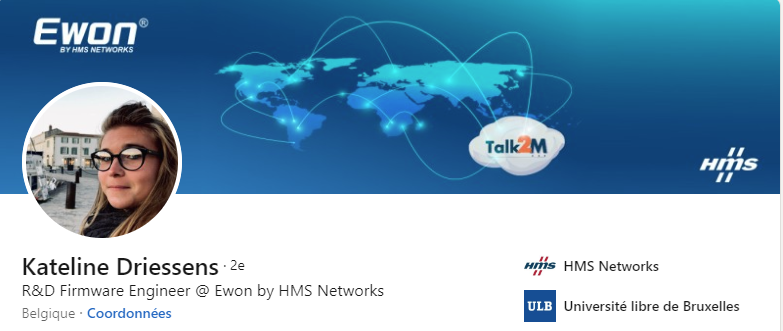

Interview
Developer & Dev-lead
Kateline Driessens à fait des études d’ingénieur civil en électronique.Travaillant
actuellement chez ewon.biz,elle est chargé de la documentation
, du développement de nouvelles features.
En tant que Dev lead elle
a le rôle managérial et organisateur.

Comment vous décrivez-vous?
Question compliquée! De façon générale je dirais quelqu’un d’énergique, réservée à première vue mais très sociable.
Professionnellement: organisée, impatiente, volontaire, curieuse.
Pourquoi avez-vous décidé de vous lancer dans l’informatique?
A la base j’ai fait des études d’ingénieur civil en électronique. Mes parents possèdent une entreprise de matériel
biomédical où tout est fait: les appareils eux-mêmes (hardware) et les softs (windows) permettant d’y accéder par exemple.
J’ai été travailler là à la fin de mes études et j’y ai rencontré le développement sous Delphi, bien que cela n’ait rien eu
à voir avec mes études à la base. .
Quelles sont vos tâches dans l’entreprise?
Je suis développeur et dev lead. En tant que développeur je suis chargée d’investiguer et résoudre des bugs, de maintenir
la documentation, de développer de nouvelles features. En tant que dev lead j’ai un rôle un peu plus managérial et organisateur, de
planification, de propositions de nouveaux projets.
Pourquoi avez-vous choisi de travailler dans cette boîte et pas une autre?
L’entreprise où je suis actuellement est la première que je découvre depuis l’entreprise de mes parents. C’est une
entreprise de taille moyenne, ce qui m’a attirée (venant d’une PME de 14 personnes). Le domaine où évolue l’entreprise est
aussi très intéressant (IIOT), les horaires de travail sont flexibles, l’humain est considéré, les avantages sont
intéressants,… La formation des employés est aussi au coeur de leurs préoccupations, il est donc possible d’apprendre
constamment.
Êtes-vous rentré dans cette boîte en tant que Junior?
Non en tant que “médior niveau supérieur”. Avec mon rôle de dev lead, je suis aujourd’hui senior.
Quelles sont vos qualifications?
Ingénieure civil en électronique avec un master en nano-opto-électronique et télécommunications
Quelles sont vos plus grandes réalisations?
Dans mon ancien job, l’ERP qui est toujours utilisé pour gérer tout le stock, les commandes
clients, les expéditions, réparations, livraisons, montage de matériel etc, a été écrit par mes
blanches mains!
Quels sont les avantages dans votre entreprise?
Voiture de société, DKV, assurance groupe, chèques repas, compensation nette pour le télé-travail.
Comment occupez-vous votre temps libre?
Principalement je m’occupe de mon cheval, sinon beaucoup de sport (fitness, kitesurf, wakeboard) et de la cuisine.
Où vous voyez-vous dans 3 à 5 ans?
Dans un poste de manager ou de team leader plus avancé, peut être PO - en tout cas plus développeur.
A combien s’élève, d’après vous, le salaire d’un développeur junior?
Aux alentours de 2800€ brut.